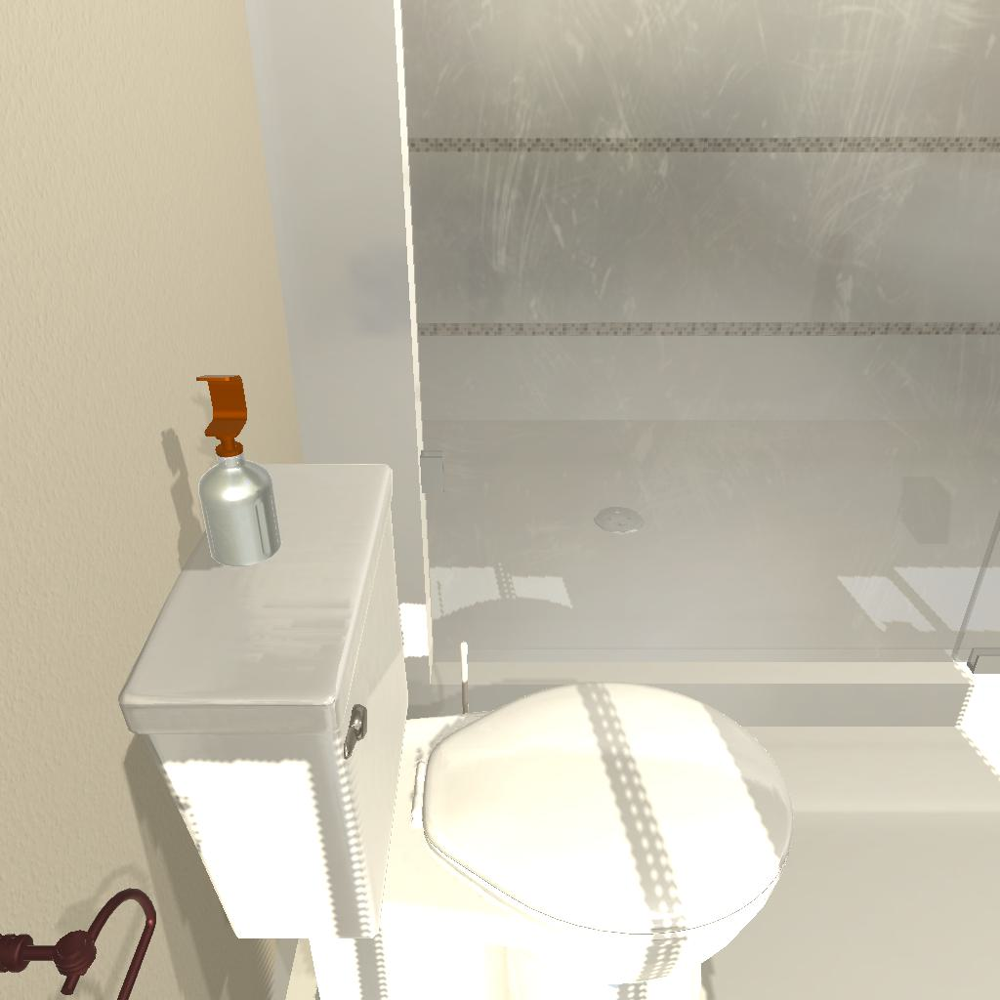

---------------------------------------------------------task: 28---------------------------------------------------------
--------------------------------------------------------------------------------------------------------------------------------------------------------------------
--------------------------------------------------------------------------------------------------------------------------------------------------------------------
Step:--------------------------------------------------------------------------0-------------------------------------------------------------------------------
----------------------------------------
VLM Prompt:
Image1:
**Instruction**
1. Analyze the provided image to identify all visible household objects, focusing on those relevant to the task description "find two spraybottle and put them in toilet."
2. Use the analysis of the image and the task hint "The agent must find an object of the desired type, pick it up, find the correct location to place it, put it down there, then look for another object of the desired type, pick it up, return to previous location, and put it down there with the other object." to answer the question: what is the most reasonable action in the choices for the task description "find two spraybottle and put them in toilet"?
4. Decide and write the answer using the template: The answer is: (i): , where i is the real number. If there is no desired object in the image, search every place based on **Initial Observation** to find the object. And if no one is exactly correct, choose a similar answer.
**Initial Observation**
You are in the middle of a room. Looking quickly around you, you can see bathtub (1), bathtubbasin (1), cart (1), sink (1), garbagecan (1), sinkbasin (1), countertop (1), drawer (1-4), toilet (1), toiletpaperhanger (1)
**Answer Choices**
(1): go to bathtub 1
(2): go to bathtubbasin 1
(3): go to cart 1
(4): go to sink 1
(5): go to garbagecan 1
(6): go to sinkbasin 1
(7): go to countertop 1
(8): go to drawer 1
(9): go to drawer 2
(10): go to drawer 3
(11): go to drawer 4
(12): go to toilet 1
(13): go to toiletpaperhanger 1
**Answer**
Let's think step by step by following the instructions.
----------------------------------------
----------------------------------------
Original Response:
First, we analyze the provided image. There is a toilet visible, and on top of the toilet tank, there is a spray bottle. Since the task is to find two spray bottles and put them in the toilet, we have already found one of the spray bottles.
Now, we need to find another spray bottle. The image does not show another spray bottle, so we must search other places based on the Initial Observation. None of the answer choices specifically mention finding a spray bottle, so we must choose a location where a spray bottle is likely to be found.
Commonly, spray bottles might be found in a bathroom's cart, countertop, or drawers, where cleaning supplies or toiletries are stored.
Given the available options, the most reasonable actions to find a second spray bottle would be to check the cart, countertop, or drawers. Since the cart is a singular, easily visible item and could hold cleaning supplies, we'll start there.
The answer is: (3): go to cart 1.
----------------------------------------
----------------------------------------
>>> Refine Original VLM Response and Get Pure Action: go to cart 1
----------------------------------------
-----------------------------------------------------------------
Running time: 8.763466358184814 seconds
Total Money: 9.892660000000001
-----------------------------------------------------------------
-----------------------------------------------------------------
Text Observation:You arrive at loc 2. On the cart 1, you see a tissuebox 1, a tissuebox 2, a faucet 1, a soapbottle 1, a spraybottle 1, a spraybottle 2, a toiletpaper 1, and a soapbar 1.
-----------------------------------------------------------------
UNSUCCEED